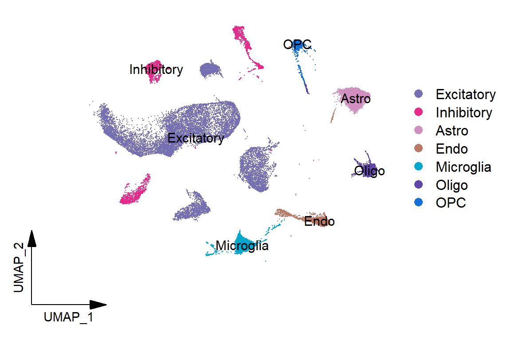
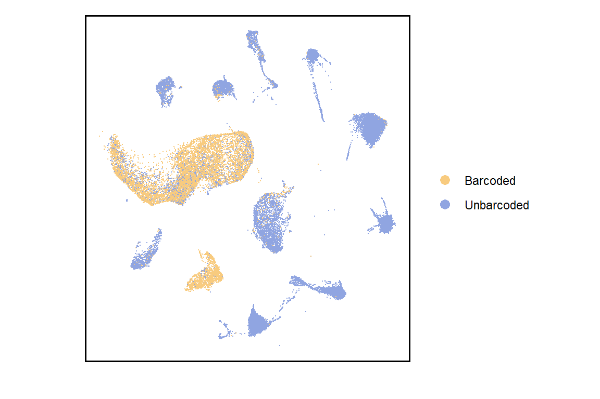
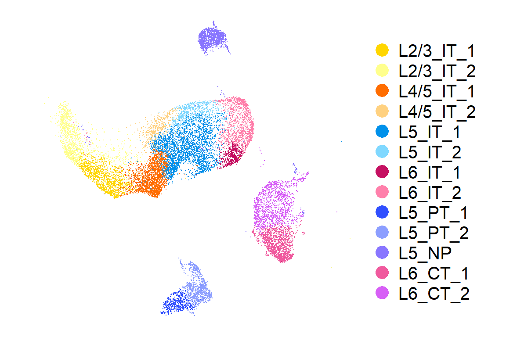
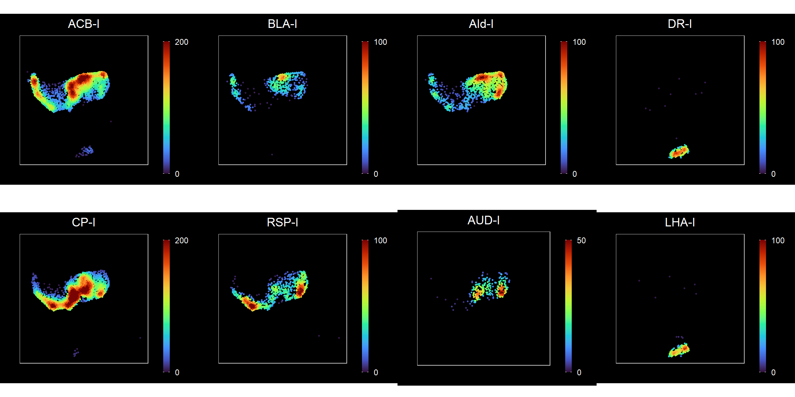
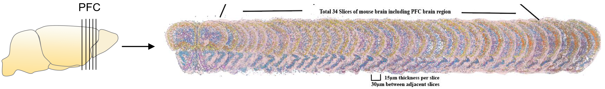
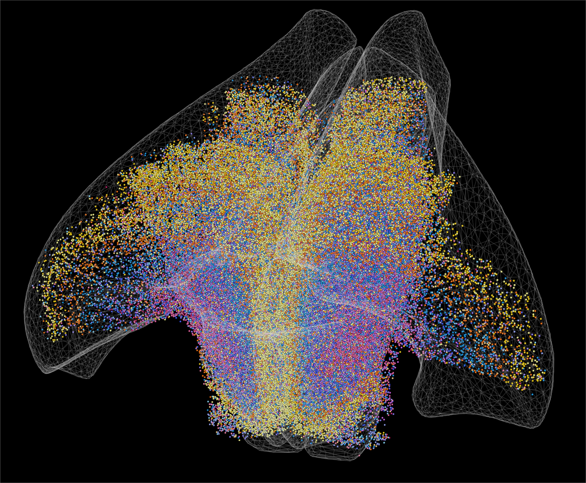
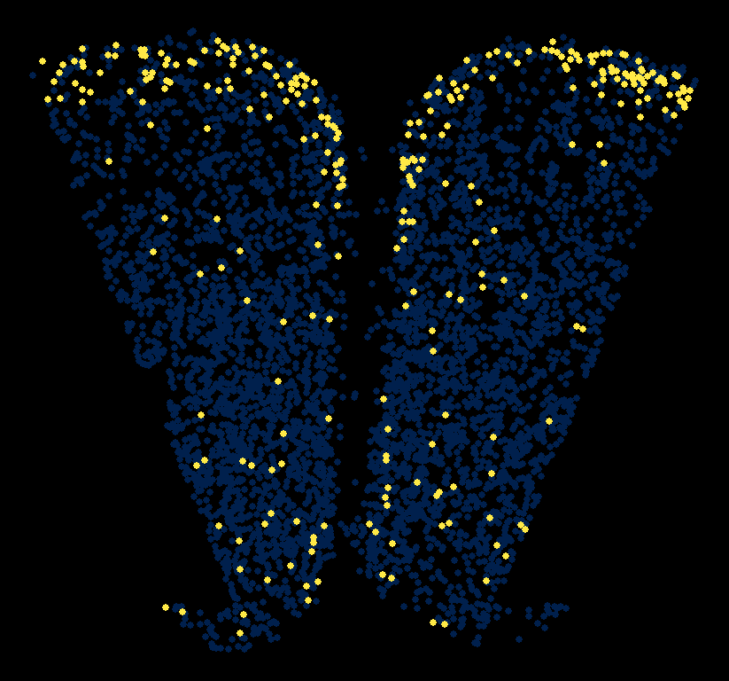
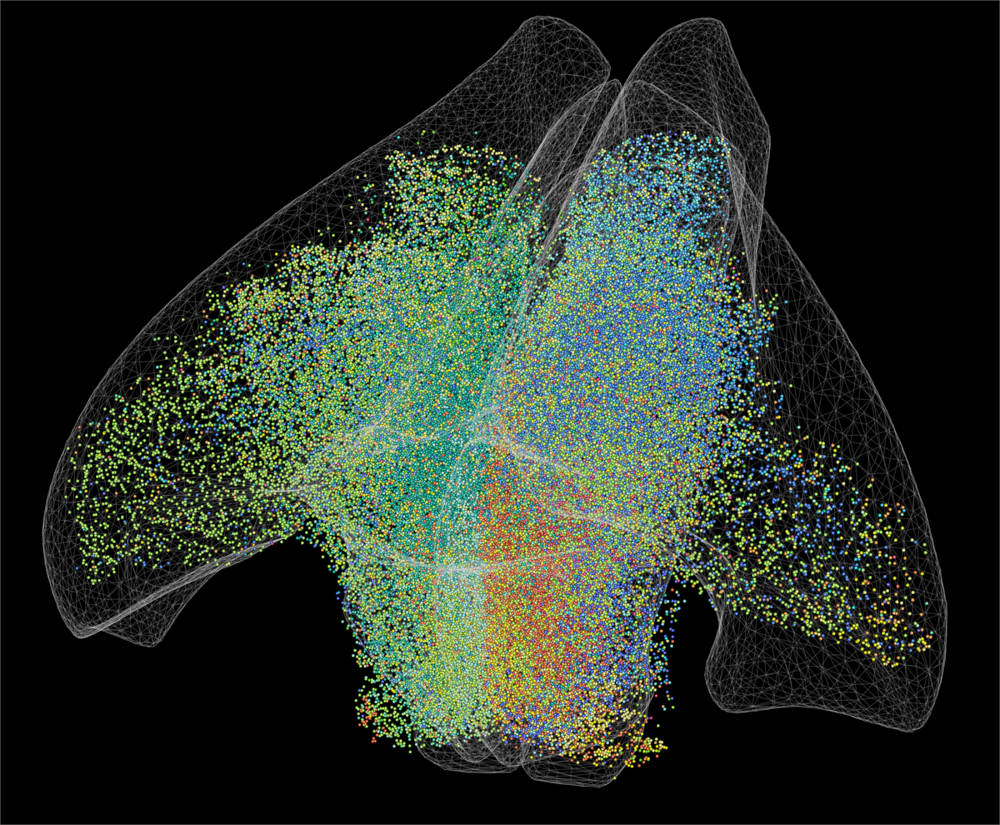
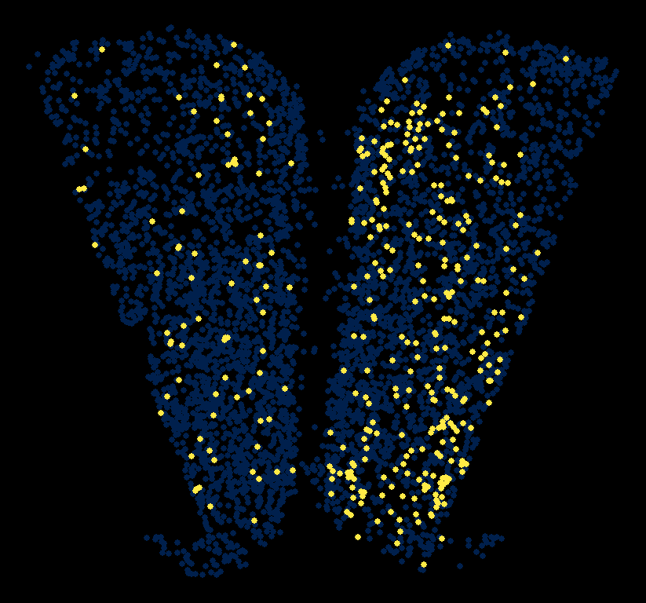

Code
library(Seurat)
library(scCustomize)
library(ggplot2)
library(ggpointdensity)
library(viridis)
library(cowplot)
library(sciRcolor)
source('bin/Palettes.R')
source('bin/includes.R')library(Seurat)
library(scCustomize)
library(ggplot2)
library(ggpointdensity)
library(viridis)
library(cowplot)
library(sciRcolor)
source('bin/Palettes.R')
source('bin/includes.R')all.Adult <- readRDS('../data/rds/all.Adult.rds')
Adult.Ex <- readRDS('../data/rds/Adult.Ex.rds')
sp.PFC <- readRDS('../data/rds/sp.PFC.rds')knitr::include_graphics("images/Figure_1A.jpg", dpi = 300)
seu <- all.Adult
cluster_order <- c("Excitatory", "Inhibitory", "Astro", "Endo", "Microglia",
"Oligo", "OPC")
seu$MainType <- factor(seu$MainType, levels = cluster_order)
Idents(seu) <- "MainType"
Figure_1B <-
DimPlot_scCustom(
seurat_object = seu,
reduction = 'umap',
colors_use = col_MainType,
figure_plot = TRUE,
label = T
) +
coord_fixed()
Figure_1B
ggsave("../pdf/Figure1/Figure_1B.pdf", plot = Figure_1B,
height = 5, width = 6, units = "in")seu <- all.Adult
Idents(seu) <- "BC_label"
Figure_1C <-
DimPlot(
seu,
cols = col_BC_label,
reduction = 'umap'
) +
theme_bw() +
theme(panel.grid = element_blank(),
axis.text = element_blank(), axis.ticks = element_blank(),
panel.border = element_rect(color = "black", size = 1)) +
labs(x="", y="") +
coord_fixed()
Figure_1C
ggsave("../pdf/Figure1/Figure_1C.pdf", plot = Figure_1C,
height = 4, width = 6, units = "in")seu <- Adult.Ex
cluster_order <- c("L2/3_IT_1","L2/3_IT_2","L4/5_IT_1","L4/5_IT_2","L5_IT_1",
"L5_IT_2","L6_IT_1","L6_IT_2","L5_PT_1","L5_PT_2","L5_NP",
"L6_CT_1","L6_CT_2")
seu$SubType <- factor(seu$SubType, levels = cluster_order)
Idents(seu) <- seu$SubType
Figure_1D <-
DimPlot_scCustom(
seurat_object = seu,
reduction = 'umap',
colors_use = col_SubType,
figure_plot = F,
label = F
) +
theme_void() +
theme(legend.text = element_text(size = 15)) +
guides(color = guide_legend(ncol = 1, override.aes = list(size = 5))) +
coord_fixed()
Figure_1D
ggsave("../pdf/Figure1/Figure_1D.pdf", plot = Figure_1D,
height = 4, width = 6, units = "in")seu <- subset(Adult.Ex, cells = colnames(Adult.Ex)[which(!(Adult.Ex$sample %in% c("Adult2","Adult3") & Adult.Ex$Ex_subtype == "PT" & Adult.Ex$BC_num > 0))])
seu <- subset(seu, cells = colnames(seu)[which(!(seu$BC_num > 0 & seu$Ex_subtype %in% c("CT", "NP")))])
df <- data.frame(
"UMAP_1" = seu@reductions$umap@cell.embeddings[,"UMAP_1"],
"UMAP_2" = seu@reductions$umap@cell.embeddings[,"UMAP_2"]
)
df$`ACB-I` <- seu$`ACB-I`
df$`CP-I` <- seu$`CP-I`
df$`BLA-I` <- seu$`BLA-I`
df$`RSP-I` <- seu$`RSP-I`
df$`AId-I` <- seu$`AId-I`
df$`AUD-I` <- seu$`AUD-I`
df$`ECT-I` <- seu$`ECT-I`
df$`SSp-I` <- seu$`SSp-I`
df$`DR-I` <- seu$`DR-I`
df$`LHA-I` <- seu$`LHA-I`
BC_col <- c("ACB-I"="#ff6e40","BLA-I"="#ffab40","AId-I"="#ffff00","DR-I"="#ff8a80",
"CP-I"="#448aff","RSP-I"="#84ffff","AUD-I"="#18ffff","LHA-I"="#ff4081")
df <- df[which(df$UMAP_1<7),]
max_limits <- c(200,100,100,100,
200,100,50,100)
plist <- list()
plist_legend <- list()
for (i in 1:8){
df_i <- df[which(df[,names(BC_col)[i]]>0.1),]
df_i <- df_i[,c("UMAP_1","UMAP_2",names(BC_col)[i])]
colnames(df_i) <- c("UMAP_1","UMAP_2","Value")
col <- pal_scircolor(100)
plist[[i]] <-
ggplot() +
geom_point(df, mapping = aes(x = UMAP_1, y = UMAP_2), color="black", size=0.5) +
geom_pointdensity(df_i, mapping = aes(x = UMAP_1, y = UMAP_2), size=0.5) +
#geom_point(df_i, mapping = aes(x = UMAP_1, y = UMAP_2), color=Value, size=0.5) +
scale_color_gradientn(colours = col,
na.value = col[length(col)],
limits = c(0,max_limits[i]),
breaks = c(0,max_limits[i])
) +
coord_fixed() +
ggdark::dark_theme_bw() +
labs(title = names(BC_col)[i], x="", y="", colour = "") +
theme(plot.title = element_text(hjust = 0.5),
axis.ticks = element_blank(), axis.text = element_blank(),
panel.grid = element_blank(),
legend.position = "right",
legend.key.width = unit(0.5, "lines"),
legend.key.height = unit(2, "lines"))
#ggsave(paste("../pdf/Figure1/Figure_1E/",names(BC_col)[i],".png",sep=""),
# plot = plist[[i]], height = 3, width = 3, units = "in")
}
Figure_1E <- plot_grid(plotlist = plist, ncol = 4)
Figure_1E
ggsave("../pdf/Figure1/Figure_1E.pdf", plot = Figure_1E,
height = 6, width = 12, units = "in")knitr::include_graphics("images/Figure_1F.png", dpi = 300)
bg3d(color = "black")
par3d(userMatrix = rotationMatrix(-pi/6, -1, 1, 0), zoom = 0.6)
acr.list <- c("MOs","PL","ORBm","ACAd","ILA","DP","ACAv")
for(acr in acr.list){
mesh <- mesh3d.allen.annot.from.id(id.from.acronym(acr))
#to.del <- which(mesh$vb[1,] < 0)
to.del <- NA
mesh$it <- mesh$it[,!is.element(mesh$it[1,], to.del) & !is.element(mesh$it[2,], to.del) & !is.element(mesh$it[3,], to.del)]
#col <- color.from.acronym(acr)
col <- "lightgray"
#col <- col_Region[acr]
wire3d(mesh, col = col, material = list(lit=FALSE), alpha = 0.2)
}
df_plot <- sp.PFC@meta.data
for (i in c(1:13)){
idx_cluster = rownames(df_plot)[which(
df_plot$SubType==names(col_SubType)[i]
)]
spheres3d(x = df_plot[idx_cluster,]$ML_new,
y = df_plot[idx_cluster,]$DV_new,
z = df_plot[idx_cluster,]$AP_new,
col = col_SubType[i], radius=0.01, alpha=1)
}
rgl.snapshot('../pdf/Figure1/Figure_1G.png', top = TRUE)knitr::include_graphics("images/Figure_1G.png", dpi = 300)
bg3d(color = "black")
par3d(userMatrix = rotationMatrix(-pi/6, -1, 1, 0), zoom = 0.6)
acr.list <- c("MOs","PL","ORBm","ACAd","ILA","DP","ACAv")
for(acr in acr.list){
mesh <- mesh3d.allen.annot.from.id(id.from.acronym(acr))
#to.del <- which(mesh$vb[1,] < 0)
to.del <- NA
mesh$it <- mesh$it[,!is.element(mesh$it[1,], to.del) & !is.element(mesh$it[2,], to.del) & !is.element(mesh$it[3,], to.del)]
#col <- color.from.acronym(acr)
col <- "lightgray"
#col <- col_Region[acr]
wire3d(mesh, col = col, material = list(lit=FALSE), alpha = 0.2)
}
df_plot <- sp.PFC@meta.data
for (i in c(1)){
idx_cluster = rownames(df_plot)[which(
df_plot$SubType==names(col_SubType)[i]
)]
spheres3d(x = df_plot[idx_cluster,]$ML_new,
y = df_plot[idx_cluster,]$DV_new,
z = df_plot[idx_cluster,]$AP_new,
col = col_SubType[i], radius=0.01, alpha=1)
}
rgl.snapshot('../pdf/Figure1/Figure_1H/01.L23_IT_1_3d.png', top = TRUE)df <- sp.PFC@meta.data
df <- df[which(df$slice=='IT_slice_10'),]
SubType <- "L2/3_IT_1"
Figure_1H <- ggplot() +
geom_point(df, mapping=aes(x=X, y=Y), color="#00204DFF", size=1) +
geom_point(df[which(df$SubType==SubType),],
mapping=aes(x=X, y=Y), color="#FFEA46FF", size=1) +
coord_fixed() +
ggdark::dark_theme_void() +
theme(plot.title = element_text(size = 20, hjust = 0.5),
legend.position = 'none')
Figure_1H
ggsave("../pdf/Figure1/Figure_1H/01.L23_IT_1_2d.png", plot = Figure_1H,
height = 4, width = 4.29, units = "in")bg3d(color = "black")
par3d(userMatrix = rotationMatrix(-pi/6, -1, 1, 0), zoom = 0.6)
acr.list <- c("MOs","PL","ORBm","ACAd","ILA","DP","ACAv")
for(acr in acr.list){
mesh <- mesh3d.allen.annot.from.id(id.from.acronym(acr))
#to.del <- which(mesh$vb[1,] < 0)
to.del <- NA
mesh$it <- mesh$it[,!is.element(mesh$it[1,], to.del) & !is.element(mesh$it[2,], to.del) & !is.element(mesh$it[3,], to.del)]
#col <- color.from.acronym(acr)
col <- "lightgray"
#col <- col_Region[acr]
wire3d(mesh, col = col, material = list(lit=FALSE), alpha = 0.2)
}
barcode <- c("VIS-I","ACB-I","CP-C","AId-I","CP-I","ECT-C","AId-C","ECT-I",
"BLA-I","AUD-I","RSP-C","SSp-I","RSP-I","ACB-C","LHA-I")
df_plot <- sp.PFC@meta.data
df_plot <- df_plot[df_plot$ABA_PFC=="PFC" & df_plot$BC_num>0,]
df_plot$first_target <- barcode[apply(df_plot[,barcode], 1, which.max)]
for (i in 1:length(barcode)){
idx_cluster = rownames(df_plot)[which(
df_plot$first_target==barcode[i]
)]
col <- col_Barcode[gsub('.','-',barcode[i],fixed = T)]
spheres3d(x = df_plot[idx_cluster,]$ML_new,
y = df_plot[idx_cluster,]$DV_new,
z = df_plot[idx_cluster,]$AP_new,
col = col, radius=0.01, alpha=1)
}
rgl.snapshot('../pdf/Figure1/Figure_I.png', top = TRUE)knitr::include_graphics("images/Figure_1I.png", dpi = 300)
bg3d(color = "black")
par3d(userMatrix = rotationMatrix(-pi/6, -1, 1, 0), zoom = 0.6)
acr.list <- c("MOs","PL","ORBm","ACAd","ILA","DP","ACAv")
for(acr in acr.list){
mesh <- mesh3d.allen.annot.from.id(id.from.acronym(acr))
#to.del <- which(mesh$vb[1,] < 0)
to.del <- NA
mesh$it <- mesh$it[,!is.element(mesh$it[1,], to.del) & !is.element(mesh$it[2,], to.del) & !is.element(mesh$it[3,], to.del)]
#col <- color.from.acronym(acr)
col <- "lightgray"
#col <- col_Region[acr]
wire3d(mesh, col = col, material = list(lit=FALSE), alpha = 0.2)
}
barcode <- c("VIS-I","ACB-I","CP-C","AId-I","CP-I","ECT-C","AId-C","ECT-I",
"BLA-I","AUD-I","RSP-C","SSp-I","RSP-I","ACB-C","LHA-I")
df_plot <- sp.PFC@meta.data
df_plot <- df_plot[df_plot$ABA_PFC=="PFC" & df_plot$BC_num>0,]
df_plot$first_target <- barcode[apply(df_plot[,barcode], 1, which.max)]
for (i in c(1)){
idx_cluster = rownames(df_plot)[which(
df_plot$first_target==barcode[i]
)]
col <- col_Barcode[gsub('.','-',barcode[i],fixed = T)]
spheres3d(x = df_plot[idx_cluster,]$ML_new,
y = df_plot[idx_cluster,]$DV_new,
z = df_plot[idx_cluster,]$AP_new,
col = col, radius=0.01, alpha=1)
}
rgl.snapshot('../pdf/Figure1/Figure_1J/01.VIS-I.3d.png', top = TRUE)df <- sp.PFC@meta.data
df <- df[which(df$slice=='IT_slice_10'),]
Barcode <- "VIS-I"
Figure_1J <- ggplot() +
geom_point(df, mapping=aes(x=X, y=Y), color="#00204DFF", size=1) +
geom_point(df[which(df[,Barcode]>0),],
mapping=aes(x=X, y=Y), color="#FFEA46FF", size=1) +
coord_fixed() +
ggdark::dark_theme_void() +
theme(plot.title = element_text(size = 20, hjust = 0.5),
legend.position = 'none')
Figure_1J
ggsave("../pdf/Figure1/Figure_1J/01.VIS-I.2d.png", plot = Figure_1J,
height = 4, width = 4.29, units = "in")